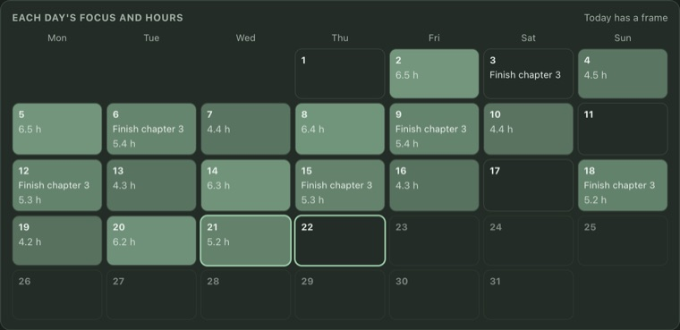
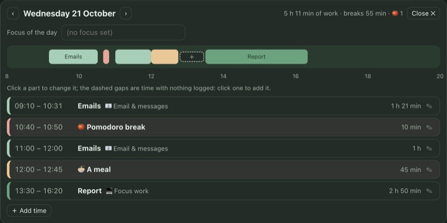

ML WorkHelp
Hi! Meet your work buddies.
Milk and Love keep you company while you work: they stroll about on your screen, keep time with you, remind you to take breaks, hold up your reminders and events, and teach you a Thai word now and then.
ภาษาไทยยังอยู่ในช่วงทดลอง
คำแปลภาษาไทยอาจยังไม่ถูกต้องทั้งหมด หากคุณอยากช่วยปรับปรุงคำแปล ติดต่อเราได้ที่ alitasdepollos01@gmail.com หรือ X @alitasdepollos0 ขอบคุณมากค่ะ
Which photos to start with?
The photos go straight into the app: nothing to unzip or move, and you can keep going while it downloads. Each photo shows who took it; use them as stickers and on your desktop, but they can't be cut or changed.
Muv's tip: you can add your own photos any time (anyone, not only MilkLove) and sort them under Milk, Love, Together or Others.
How do you want to keep time?
Then use the Focus screen: the clock fills the screen and keeps counting while you don't touch the computer. Open it from Today or the menu bar.
Muv's tip: not sure? Start with the work clock. Switch any time with the switch at the top of the timer on Today.
1. The desktop buddy
- Drag it anywhere, onto any screen; right-click it for its menu.
- Click it and it does something else; on a break, click it to say you're back.
It's out. Try dragging it.
Muv's tip: change it any time on the Desktop buddy page (its size too: small to extra large), or right-click the buddy.
2. Everything is in one window
2. Everything is in one window
Click the little icon at the top right of your screen, in the menu bar, or right-click the buddy. The tabs down the left:
Click the little icon at the bottom right of your screen, next to the clock (it may be under the ^ arrow), or right-click the buddy. The tabs down the left:
- Today: the clock, the Pomodoro, your day
- Reminders & events
- Data: your week, month and year
- Stickers: make your own from your photos, and credit them
- Desktop buddy: who's out, how lively, which stickers
- Photo credits
- Settings: style, colours, language, keeping time
Questions? Click Muv at the bottom left: answers, and a way to email us
Muv's tip: the style, colours and language are in Settings, and on the first page of this tour.
3. Your work time
- Each day the buddy asks whether to start; the clock counts from Start.
- Set a focus of the day: the theme of the whole day. Data shows each day's.
- Click the name of what you're doing to switch to another task, or type a new one.
- Take a break: pick what it is and how long; when you're back, press I'm back.
- Done for today: what you've done so far is logged, the day ends, with a sticker celebration
- Today's log is a timeline: click a part to change it; click a dashed gap to add time you forgot.
- Focus screen: away from the computer? The clock fills the screen and keeps counting; you pick its colours, place and size.
Muv's tip: name your task once in the morning, then just switch when you change.
3. The Pomodoro
- 25 minutes of focus, 5 of rest, a longer break every 4 rounds (or your own lengths). Start a round on Today, in the menu bar or from the buddy's right-click menu.
- Every break is one screen: make it lunch, the toilet…, with a MilkLove video (GMMTV OFFICIAL)
- Done for today: a half-done round counts too (only focus time counts as work), then a sticker celebration. Away from the computer? Each round can open the Focus screen.
- Menu bar timer: with everything put away, 🍅 18:42 shows beside the heart (☕ on a break); change it in Settings › Look & menu bar.
Muv's tip: one thing per round works best. Put the window away while you focus: the menu bar shows how long is left.
4. Reminders & events
- Write what it is, then tap when: in 15 minutes, tonight, or pick a date and time.
- Reminders: when it's time, the buddy holds it up, with a Thai word that goes with it.
- Events: no calendar needed, they stay in the app; the buddy reminds you before each starts. Connect Apple Calendar and they go both ways.
- It rings when it's time: the chime, or Milk and Love's voices (“พี่มิว!”, “น้องเลิฟ”, “P'Ink!”, “牙蟲”…); pick it in Settings › Reminders & events.
- With the buddy hidden, a small card pops up at the top right of the screen you're on. While you focus (the focus screen or a Pomodoro round), reminders wait and come together at the end; events still come through.
Muv's tip: connect either one (or switch it off) any time in Settings.
5. Data
- A week, a month or a year, in three tabs: Summary (the numbers, highlights, each day's bar), Analysis (where the time went, breaks, when you work, how focused) and Calendar. In a year, click a month and the whole page is that month.
- Calendar: each day's focus and hours; click a day to see what you did: a timeline, click a part to change it, fill in a gap.
- Every number is compared with the period before (▲▼). Export it as a spreadsheet; everything stays on your computer.
- Make a picture: six little cards (My week, My day, Pomodoros…) with a sticker you pick, and its photo's credit on the card.
Muv's tip: open the calendar at the end of the month and see what it was all about.


6. Make your own stickers
- Open the Stickers tab → ＋ Add photos: anyone you like.
- Sort each into Milk, Love, Together or Others.
- Pick Others as your buddy if you like; new stickers show up by themselves.
- Click any sticker to see the photo it came from, and who took it.
Use photos you have the right to use, with their credit. You're responsible for the photos you add. The stickers you make stay in this app (as desktop buddies): they can't be copied, saved or pasted anywhere else. The ones that come with the app are there to look at, with their original photos, not to change.
New versions & important notices
One last step: leave your email. We'll write when there's a new version, or something you need to know: for example, if a photo or sticker's rights holder contacts us and asks for something to be removed, we'll update the app and tell you what to do.
- Only ML WorkHelp's new versions and things you need to know (copyright updates, say). No ads, no spam.
- Never shared, sold or given to anyone, and never used for anything else.
- Stop any time: "unsubscribe" in any of our emails, or write to alitasdepollos01@gmail.com.
You're all set!
Have a good day of work. สู้ๆ นะ! (su su na: you've got this!)
When you click Finish, the app's window opens and Muv shows you around it.
Thank you to the people behind these photos and drawings
✓ Gave us permission: Blumoon, Lyrac, NGMin and otter (photos), and wanwannjeab (the cartoon Muv drawings). Thank you to everyone else above too. For the rest, we tried to reach the photographers but heard nothing back, or we don't know who took them. If a photo is yours and you'd like the credit changed or the photo removed, tell us any time and we'll fix it in the next update:
See it again in Settings → About, or from the menu: Welcome and tour…